CS184/284A Fall 2026 Homework 3 Write-Up
Names: Jameson Liu
Link to webpage: cal-cs184-student.github.io/hw3-jl-writeup/
Link to GitHub repository: github.com/cal-cs184-student/hw3-jl

Overview
I built a Monte Carlo path tracer that generates camera rays, intersects scene geometry, and uses a bounding volume hierarchy to speed up intersection tests. It estimates direct and indirect illumination and uses adaptive sampling to reduce the number of rays spent on converged pixels.The most useful lesson was how each stage depends on the previous one. A small intersection error affects BVH traversal and shadow rays, while insufficient sampling appears as noise even when the lighting equations are correct.
Part 1: Ray Generation and Scene Intersection
For each pixel sample, I jitter a point inside the pixel and normalize its image coordinates. I map that point to the camera-space sensor at z = -1 using the horizontal and vertical fields of view. The ray starts at the camera position; its direction passes through the sensor point, is rotated into world space, and is normalized. Its valid interval runs from the near clip distance to the far clip distance.For triangle intersections, I used the Möller-Trumbore algorithm. It uses the triangle's two edges and the ray direction to solve for the ray distance and two barycentric coordinates. A zero determinant means there is no unique intersection; otherwise, I reject coordinates outside the triangle or a distance outside the ray interval. At a hit, I interpolate the vertex normals using the barycentric coordinates and normalize the result.
For spheres, I substitute the ray equation into the sphere equation and solve the resulting quadratic. I choose the nearest valid root and store its distance, normal, primitive, and BSDF. After a hit, I tighten the ray's maximum distance so later tests retain only the closest intersection.
|
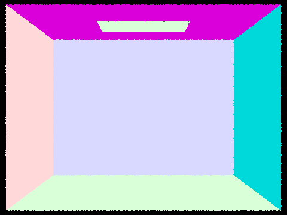 |
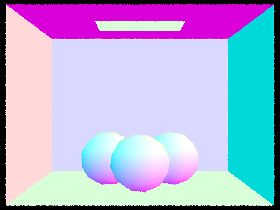 |
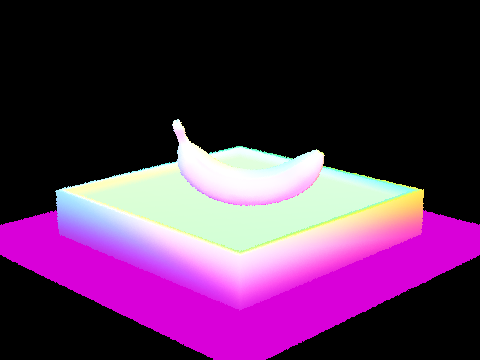 |
Part 2: Bounding Volume Hierarchy
I build the BVH recursively. Each node expands a bounding box around its primitives, and nodes with at most four primitives become leaves. Otherwise, I split along the bounding-box axis with the greatest extent, using the mean primitive-centroid coordinate as the splitting point. If every centroid lies on one side of that point, I split the range at its midpoint so recursion always makes progress.Traversal first tests the ray against the node bounding box. A miss skips the subtree. Leaf nodes test their primitives, while internal nodes recurse into both children. For shadow rays, traversal can stop at the first hit. For visible-surface rays, it continues so the closest hit is retained.
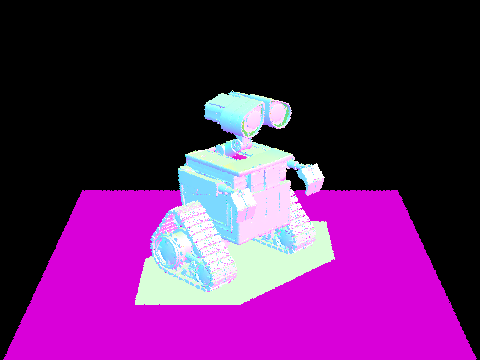 |
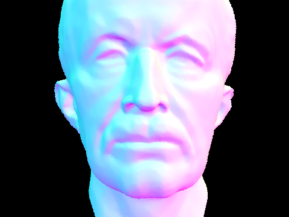 |
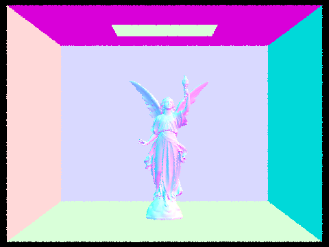 |
| Scene | Without BVH | With BVH |
|---|---|---|
| Empty | 0.32 s | 0.30 s |
| Banana | 0.38 s | 0.04 s |
| Cow | 0.87 s | 0.07 s |
These measurements used 480×360 renders and eight threads. The empty scene contains very little geometry, so the hierarchy only reduces the render time from 0.32 s to 0.30 s. The banana scene shows a much larger difference, falling from 0.38 s to 0.04 s once rays can skip groups of primitives. The cow scene benefits most in this set, dropping from 0.87 s to 0.07 s. The larger scenes have more geometry for missed bounding boxes to eliminate, which is why the hierarchy matters more as scene complexity increases.
Part 3: Direct Illumination
Uniform hemisphere sampling draws directions uniformly over the local hemisphere. For each direction, I cast a shadow ray and add the emitted radiance at its first hit, weighted by the BSDF, cosine term, and inverse PDF.Importance sampling draws directions from each scene light. Delta lights use one sample, while area lights use the configured number of light samples. I trace a shadow ray that stops just before the light and add an unoccluded sample using its radiance, BSDF value, cosine factor, and PDF.
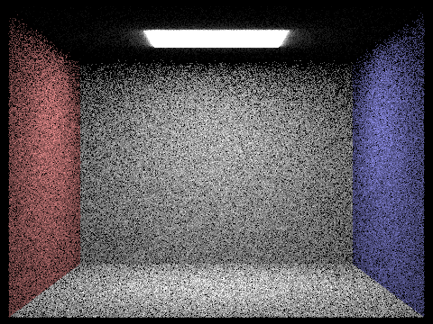 |
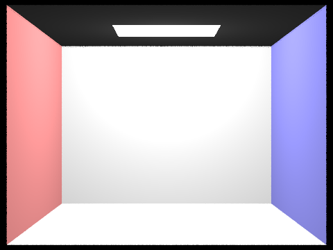 |
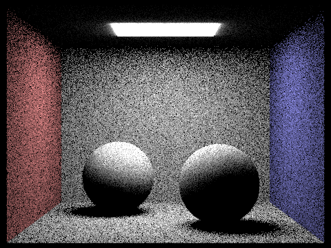 |
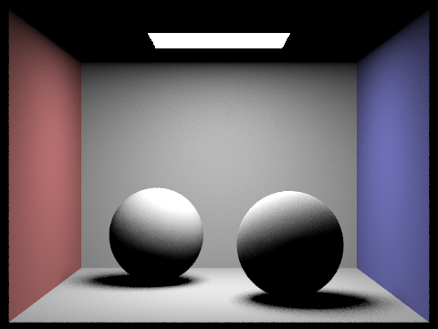 |
For the bunny scene, with one camera sample per pixel and light sampling, increasing the number of light samples smooths the bunny's soft shadow by averaging more area-light samples.
Uniform hemisphere sampling wastes many samples on directions that never reach a light, especially when an area light occupies only a small portion of the hemisphere. The uniform-sampling images are therefore visibly noisier in both scenes. Light sampling aims directly at the light, so more samples contribute useful illumination. In these renders, it produces cleaner walls and shadowed regions.
Part 4: Global Illumination
At each hit, I add the direct-light estimate, sample an incoming BSDF direction, and recursively trace a new ray from the surface. The recursive contribution is weighted by the sampled BSDF, cosine term, and inverse PDF. The first indirect bounce is always traced when the depth limit permits it. Later bounces use Russian Roulette with continuation probability 0.65; surviving contributions are divided by that probability. With accumulation disabled, the renderer keeps only the requested bounce; directly visible emission appears only at depth zero. The dragon is black because its mirror material is outside the diffuse BSDF implementation for this assignment. In the bunny comparison, direct light leaves the underside dark, while indirect light fills that area and carries color from the walls. Both images include the directly visible emitter.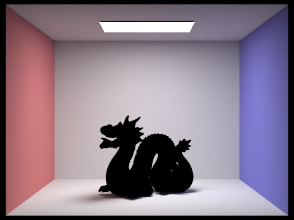 |
|
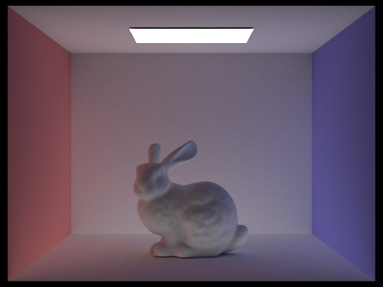 |
Individual and accumulated bounces
The second-bounce image shows light that has reflected from another surface before reaching the visible surface. It fills some of the bunny's dark areas and carries color from the walls. The third bounce is dimmer, but adds more indirect light and color. A basic rasterized image with direct lighting alone would miss these interreflections, leaving those areas darker. The accumulated images combine these contributions and become brighter as the depth increases.| Max ray depth | Unaccumulated bounce | Accumulated bounces |
|---|---|---|
| 0 | 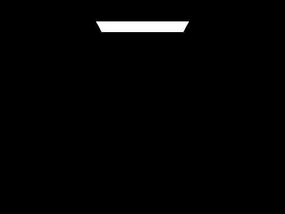 | 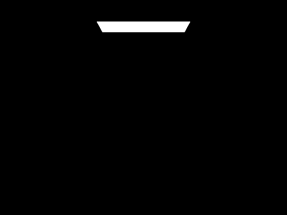 |
| 1 | ||
| 2 | 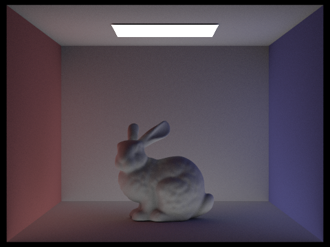 | |
| 3 | 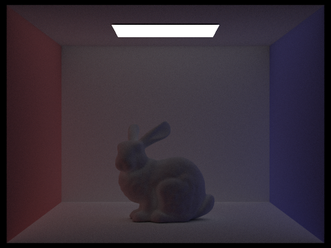 | |
| 4 | 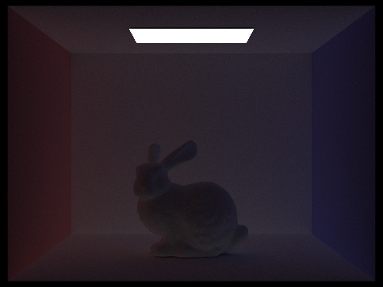 | |
| 5 | 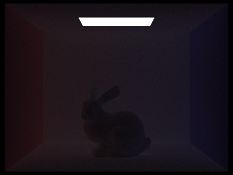 |
Russian Roulette
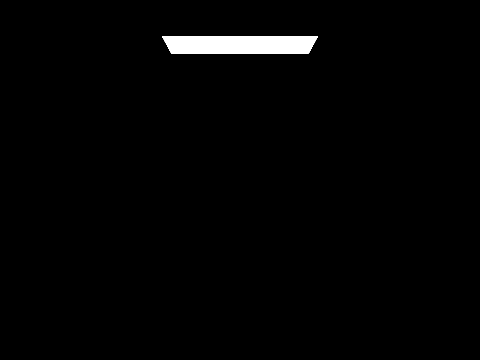 |
||
Samples per pixel
These renders use four light rays. More samples per pixel average independent path estimates, reducing noise most visibly in indirect-light and soft-shadow regions.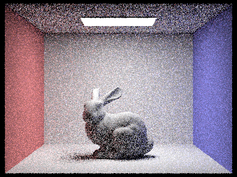 |
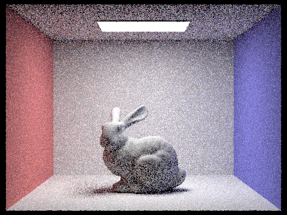 |
|
Part 5: Adaptive Sampling
Adaptive sampling gives difficult pixels more samples and stops early on pixels that have converged. For each pixel, I accumulate illuminance and squared illuminance. After each batch, I compute their mean and unbiased variance, then stop if the estimated 95% confidence interval's half-width is at most the tolerance times the mean. I clamp negative variance from floating-point roundoff to zero and store the number of samples used.In the rate images, smooth walls converge early, while the bunny, spheres, and shadow boundaries often need more samples. Blue indicates a low fraction of the maximum sample count and red indicates a high fraction. The following use at least 2048 maximum samples per pixel, one light sample, and a maximum ray depth of at least five.
| Scene | Adaptive sampling rate | Rendered result |
|---|---|---|
| Bunny | 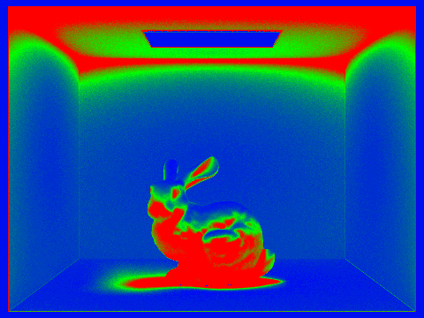 |
|
| Spheres | 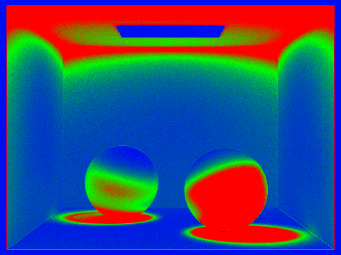 |
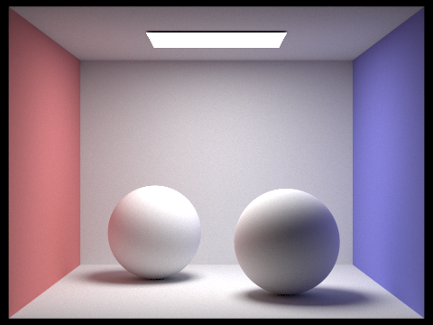 |